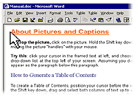
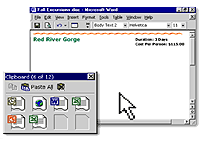

|
Technook
Copy
Formatting Using Format Painter
by:
Daisy Binuya
Format
Painter copies the formatting (size, font style, color, borders,
etc.) from a selected object or text and applies it to the
next object or text you click.
To
copy formatting in any Office 2000 program using the Format
Painter:
-
Select the text or object that has the formatting you want
to copy.
- On
the Standard toolbar, click Format Painter. (In Access the
Format Painter is found on the Database toolbar.)
-
Select the text or object you want to apply the formatting
to, and the formatting appears automatically.
Copy
and Paste Up to 12 Pieces of Information at Once
by:
Daisy Binuya
If you're constantly copying text and data between different
Office programs, here's a way to save time by copying multiple
items at once.
For
example, you can copy a chart in Microsoft Excel, switch to
Microsoft PowerPoint® and copy a bulleted list, switch
to Microsoft Internet Explorer and copy a page of text, and
then switch to Microsoft Word and paste the collection of
copied items into your document.
Here's
how:
- In
any Office 2000 program, on the View menu, point to Toolbars
and click Clipboard to display the Office Clipboard.
- Select
an item you want to copy.
- Copy
the item into the Office Clipboard by clicking Copy on the
Edit menu or clicking the Copy button on the Clipboard toolbar.
-
Repeat steps two through four until you have copied all
the items (up to 12) you want. If the item you want to copy
is in another program, switch to that program first.
-
In an Office program, click where you want to paste the
items.
-
To paste all the items at once, click Paste All on the Clipboard
toolbar. Or to paste the items one at a time, click the
icon for the item you want to paste.
Note:
You can copy items while using any program that provides copy
and cut functionality, but you can paste items only into Microsoft
Access, Excel, Microsoft Outlook®, PowerPoint, or Word.
next:
Why it hurts to work at the computer >>
|